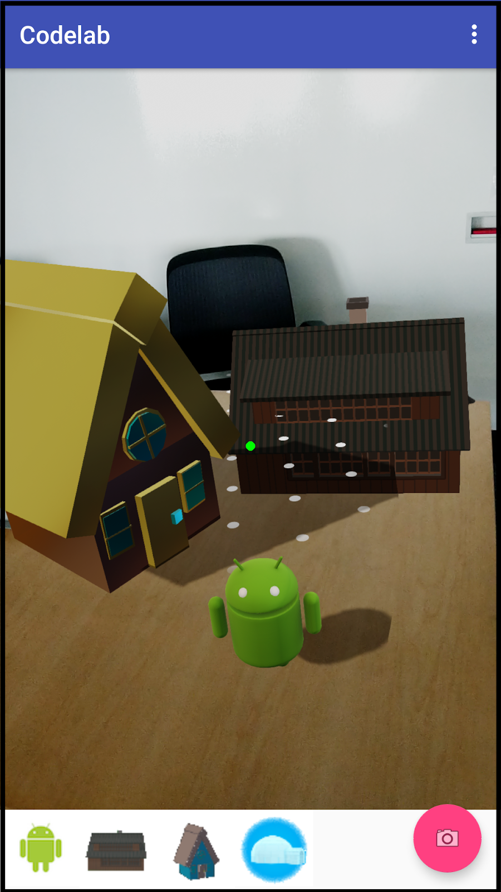
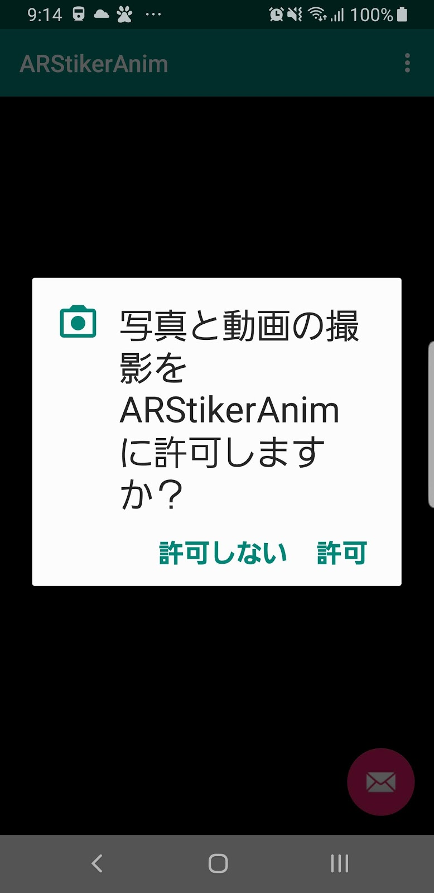

※このコードラボ教材はGoogleのIntroduction to Sceneformを@ega1979と@ken1_taka が日本語に翻訳したものです。
ここで学ぶこと
このコードラボでは、ARステッカーのようなアプリの開発を順を追って解説します。このアプリは配置することができるオブジェクトのギャラリーを表示し、拡張空間に設置します。そしてそのARシーンの写真を撮って保存することができます。

SceneformはJavaを使って3DモデルをレンダリングするためのハイレベルのAPIを提供します。開発者がAR体験を作成する速度を劇的に早くします。
特徴：
- ARCoreのセッション生成と共通のUX要素を簡単にハンドリングできるよう、SceneformのfragmentをAndroidアプリに追加します
- 複数のオブジェクトを同じシーンに配置するための、ノードをベースにしたシーングラフ
- 3DモデルのAndroid Studioプロジェクトへのインポート
- ARシーンの中にオブジェクトを配置、移動するためのやりとりのハンドリング
- AR体験の写真を撮る
事前準備
コードラボを始める前に次のものが揃っていることを確認してください。
- 3.1以上のバージョンのAndroid Studio
- ARCore対応のAndroid端末
- 端末とPCを接続するUSBケーブル
- インターネットへの接続（ビルドの際にライブラリをダウンロードするために必要）
後ほどこのコードラボのための3Dアセットをコピーするために、GitHubのリポジトリからサンプルアセットをダウンロードしておきます。このリポジトリには参考のための完成版のプロジェクトが含まれます。
はじめる前に必要なことの詳細は https://developers.google.com/ar/develop/java/sceneform/ にあります。
これで必要なことは全て揃いました。始めましょう！
Android Studioで新しいプロジェクトを次の設定で作成します。
Phone and Tablet API 24 7.0 (Nougat)

Basic Activity - フローティング アクション ボタンは写真を撮るためのボタンとして使用します。
activityの名前はデフォルトの "MainActivity" のままにしておきます。
GradleスクリプトにJava 8を有効にする記述と、Sceneformの依存関係の記述を追加します。
Java 8の有効化
SceneformはJava 8の言語記述を使用します。
min APIレベルを26以上のプロジェクトで、明示的にJava 8のサポートを追加する必要があります。
app/build.gradle の android {} セクションに次の記述を追加します。
app/build.gradle
compileOptions {
sourceCompatibility JavaVersion.VERSION_1_8
targetCompatibility JavaVersion.VERSION_1_8
}ARCoreとSceneformの依存関係の追加
app/build.gradle にSceneform APIとSceneform UXエレメントの依存関係を追加します。
dependency {} セクションに次の記述を追加します。
app/build.gradle
implementation "com.google.ar.sceneform.ux:sceneform-ux:1.8.0""Sync now" のリンク文字を押してプロジェクトを更新します。
これでプロジェクトの準備は完了です！
Sceneformのフラグメントをビューのレイアウトに追加しましょう。
複数のビューとのやり取りを含む良いAR体験を作るには幾つかの側面があります。
例えばARCoreが平面を検出するために端末を動かすことを促すインジケーターの表示や、配置するオブジェクトを移動させたり拡大縮小するためのジェスチャーのハンドリング、といったことがあげられます。
それらを実現するために、ArFragment を app/res/layout/content_main.xml ファイルに追加します。
content_main.xmlを開いて、fragmentとviewを追加します。以下にレイアウトファイルのテキストを示しますが、graphicalビューの方が慣れているようでしたら遠慮なくそちらを使ってください。
既にあるTextViewの記述を次のfragmentの内容で置き換えます。
content_main.xml
<fragment
android:id="@+id/sceneform_fragment"
android:name="com.google.ar.sceneform.ux.ArFragment"
android:layout_width="match_parent"
android:layout_height="match_parent" />ARCoreのエントリをAndroidManifestに追加する
ARCoreを使う際はAndroidManifestにエントリを必要とします。これらはアプリケーションがカメラを使うことと、AR機能を使用するにあたってアプリの実行にARCoreが必須という設定と共に使用されることを宣言します。最後のメタデータのエントリはPlayストア上でARCoreに対応していない端末からは、このアプリが見えないようフィルタリングするために使用されます。
app/manifests/AndroidManifest.xmlを開いて、<manifest>セクションに次のエレメントを追加します。
AndroidManifest.xml
<uses-permission android:name="android.permission.CAMERA" />
<uses-feature android:name="android.hardware.camera.ar" android:required="true" /><application>セクションには次のメタデータを追加します。
AndroidManifest.xml
<meta-data android:name="com.google.ar.core" android:value="required" />ArFragmentフィールドの追加
ARシーンの実装にあたり、この先で何度もこのフラグメントを参照することになります。これを容易にするために、MainActivityを開いてクラスの先頭にメンバ変数をつぎのようにして追加します。
MainActivity.java
private ArFragment fragment;クラスのインポートを忘れずに！
- 現在のクラスパッケージにない全てのクラスはインポートされる必要があります
- Android Stuiodでは、Macなら⌥-return 、WindowsならAlt + Enter のキーを押すと自動でインポートしてくれます
onCreate()の最後でこの変数を初期化する処理を追加します。
ここではフラグメントを使っているため、このfragmentを見つけるためにはfragment managerを使います。
MainActivity.java
fragment =
(ArFragment)getSupportFragmentManager().findFragmentById(R.id.sceneform_fragment);さて、ここまででARCoreを使い始めるために最小限のコードが用意できました。次の手順で実際に動作するか試してみましょう！
先ほど追加したArFragmentはパーミッション、ARCoreのセッションの生成、平面検出のUIをハンドリングします。
最初にカメラ使用権限のリクエストが表示されるはずです。

続いて、平面を検出するために端末を動かす必要があることを示すアニメーションが表示されるはずです。平面の検出には表面に何らかの模様があることが必要です（白い机の上とは対象的に）
床には平面を検出するのに適した場所があるはずです。検出した平面の部分は白いドットパターンで示されます。
もし何かエラーがある場合は、この先のコードラボを進める前に解決しておきましょう。
このアプリケーションではARシーンに配置できるモデルのセットを提供します。その中のひとつを選択してビューにドラッグ＆ドロップするUIを使うこともできますが、モデルを配置したい場所を見てタップする方法がベストだと思います。
この方法だと操作する指が視界を隠すことがないため、画面がよく見えるようになります。ドラッグする間に端末を正しい位置に持ち続ける面倒さも軽減します。
そのために、オーバーレイとしてのポインターを追加します。オーバーレイは常にスクリーンの中心に位置し、後ほど写真を撮る際は表示されないようにします。
ViewオーバーレイはDrawableを必要とします。メニューから File→New→Java Class の順に選択して、PointerDrawableという名前のクラスを作成します。このクラスはDrawableを継承するようにします。Superclassにはandroid.graphics.drawable.Drawableを指定しましょう。
Android Studioのエディターの中で「赤い電球のボタン」を押して、［Implement Methods］を選択します。すると空の状態の必要な各メソッドが生成されます。
これから実装するポインターは2つの状態を持ちます。
enabledはその位置にオブジェクトを配置できることを示し、disabledは配置できないことを示します。
2つのメンバ変数が必要です。
- 描画のためのPaintオブジェクト
- enable/disableを示すBooleanフラグ
クラスの先頭にこれらのフィールドを追加します。
PointerDrawable.java
private final Paint paint = new Paint();
private boolean enabled;enabled変数のgetterとsetterを追加します。
PointerDrawable.java
public boolean isEnabled() {
return enabled;
}
public void setEnabled(boolean enabled) {
this.enabled = enabled;
}ここでdrawメソッドを実装します。enabledの時は緑の円を、disabledの時は灰色のXを描画します。
PointerDrawable.java
@Override
public void draw(@NonNull Canvas canvas) {
float cx = canvas.getWidth()/2;
float cy = canvas.getHeight()/2;
if (enabled) {
paint.setColor(Color.GREEN);
canvas.drawCircle(cx, cy, 10, paint);
} else {
paint.setColor(Color.GRAY);
canvas.drawText("X", cx, cy, paint);
}
}このプロジェクト用にはここまで十分ですので、他のメソッドは無視しても大丈夫です。
MainActivityに戻って、ポインターを初期化し、ARCoreからのトラッキングの状態を元にenableとdisableにするためのコードを追加します。
ARCoreにより検出された平面をユーザーが見ている際に
3つのメンバー変数をMainActivityに追加します。
- PointerDrawable pointer
- boolean isTracking - ARCoreのトラッキング状態を示す
- boolean isHitting - ユーザーが平面を見ているか示す。この変数に値をセットするメソッドはhitTestと呼ばれる。そのためisHittingという名前になっている。
MainActivity.java
private PointerDrawable pointer = new PointerDrawable();
private boolean isTracking;
private boolean isHitting;onCreate()の最後にArSceneViewのリスナーを追加します。このリスナーは毎フレームの処理が開始される前に呼び出されます。この中ではARCoreのAPIを呼び出し、ポインターのステータスを更新することができます。
ラムダを使用して最初にフラグメントのonUpdateメソッドを呼び出し、その次にMainActivityのonUpdateを呼び出します。
MainActivity.java
fragment.getArSceneView().getScene().addOnUpdateListener(frameTime -> {
fragment.onUpdate(frameTime);
onUpdate();
});onUpdate() の実装
最初に、トラッキング状態を更新します。ARCoreがトラッキングをしていない場合は、トラッキングが復活するまでポインターを削除します。
次に、ARCoreがトラッキングをしている場合は、ユーザーの視線がARCoreが検出した平面にぶつかるかどうかチェックし、その状況に応じてポインターをenableにします。
MainActivity.java
private void onUpdate() {
boolean trackingChanged = updateTracking();
View contentView = findViewById(android.R.id.content);
if (trackingChanged) {
if (isTracking) {
contentView.getOverlay().add(pointer);
} else {
contentView.getOverlay().remove(pointer);
}
contentView.invalidate();
}
if (isTracking) {
boolean hitTestChanged = updateHitTest();
if (hitTestChanged) {
pointer.setEnabled(isHitting);
contentView.invalidate();
}
}
}updateTracking()はARCoreのカメラの状態を使用して、前回の呼び出しから状態が変わったかどうかを返します。
MainActivity.java
private boolean updateTracking() {
Frame frame = fragment.getArSceneView().getArFrame();
boolean wasTracking = isTracking;
isTracking = frame != null &&
frame.getCamera().getTrackingState() == TrackingState.TRACKING;
return isTracking != wasTracking;
}updateHitTest()はARCoreのFrame.hitTest()を呼び出します。ぶつかったことが検出されると直ちにこのメソッドはリターンします。なお、ここでは画面の中心の座標を必要とするため、getScreenCenter()というヘルパーメソッドを追加します。
MainActivity.java
private boolean updateHitTest() {
Frame frame = fragment.getArSceneView().getArFrame();
android.graphics.Point pt = getScreenCenter();
List<HitResult> hits;
boolean wasHitting = isHitting;
isHitting = false;
if (frame != null) {
hits = frame.hitTest(pt.x, pt.y);
for (HitResult hit : hits) {
Trackable trackable = hit.getTrackable();
if (trackable instanceof Plane &&
((Plane) trackable).isPoseInPolygon(hit.getHitPose())) {
isHitting = true;
break;
}
}
}
return wasHitting != isHitting;
}
private android.graphics.Point getScreenCenter() {
View vw = findViewById(android.R.id.content);
return new android.graphics.Point(vw.getWidth()/2, vw.getHeight()/2);
}ここまででポインターの実装を完了しました。動作するか試してみましょう！
それでは再び動作させてみましょう。アプリが起動すると、ARCoreのトラッキングが始まるまでポインターは見えません。
端末を周囲を見回すように動かすと平面が検出され、平面上にのっているか外れるかに合わせてポインターのenabledとdisabledが切り替わるはずです。
それでは、3Dモデルをインポートしてアイテムを生成してギャラリーに追加しましょう！
SceneformにはAndroid Studioの3Dモデルのインポートを補助してくれるプラグインがあり、gradleファイルへの追加とモデルのプレビューもしてくれます。
プラグインはAndroid StudioのPreferences（Windowsの場合はSettings）からインストールすることができます。
Pluginsセクションを開いたら[Browse repositories]を押して「Google Sceneform Tools (Beta)」をインストールします。
もしPluginが表示されない場合は、もう一度Android Studioのバージョンを確認してください。Google Sceneform Toolsは3.1以降のバージョンのAndroid Studioを必要とします。

では、このプラグインを使ってモデルをインポートしましょう！
Android Studio 3.1以降では「sampledata」という新しいフォルダタイプがサポートされています。このフォルダはデータをサンプルする時間のために使われます。ここでの目的は、3Dアセットをこのフォルダに元のまま保持することです。sampledataにあるファイルはAPKには追加されませんが、Android Studioのエディタ上では見ることができます。sceneformに合わせたモデルを作成するために、gradleに変換のタスクを追加して、アプリの実行時に使用できるようassetsフォルダに追加します。
projectビューでapp をクリックし、マウスの右クリックで開くメニューから[New]→[Sample Data Directory]の順に選択してsampledataフォルダを作成します。
GitHubからリソース sampledata.zip をダウンロードします。これには2つのフォルダが含まれます。
- sampledata/models - app/sampledataにコピーします
- sampledata/drawable - app/src/main/res/drawableにコピーします
このコードラボでは、テーブルトップ（卓上）サイズのシーンを作成するための4つのモデルがあります（これに対してルームスケールという言葉があります）。
これらのモデルはapp/sampledata/modelsの下にあるはずです（もしない場合は１つ前のステップに戻ってモデルをコピーしてください）。モデルは１つのオブジェクトに複数のファイルが関連付けられています。メインとなるモデルファイルは次の通りです。
- andy_dance.fbx - おなじみのAndroid
- Cabin.obj - ログキャビンのモデル
- House.obj - 家のモデル
- Igloo.obj - イグルー（氷のブロックの家）のモデル
これらのモデルはGoogleによって作成されたものでCC-BYライセンスで提供されています。これら、および他にもたくさんのモデルがPolyというウェブサイトにあります。
Sceneformプラグインを使って変換タスクをbuild.gradleに追加して、モデルをプレビューしましょう。
app/sampledata/models/andy_dance.fbxを選択し、右クリックして開くメニューから [Import Sceneform Asset] の順に選択します。すると Import Wizard ダイアログが開き、全ての設定項目には適切な内容が設定された状態になります。
"+"ボタンを押してAnimation Filesの項目を追加し、sampledata/models/andy_dance.fbxを選択します。
Finishボタンを押してモデルをインポートします。
このインポート処理はテキストファイルである ‘.sfa' ファイルを生成し、その.sfaファイルはバイナリの ‘.sfb' ファイルにコンパイルされます。'.sfa'ファイルはアセットと手入力で編集するパラメーターのためのjson風の仕様を含みます。'.sfb'ファイルはアプリケーションで使うためのバイナリリソースにコンパイルされます。Sceneformプラグインは'sfb'ファイルを開いてエディターで調整することができますが、編集した内容は'sfa'ファイルに保存され、'.sfb'のバイナリアセットに同期されることに留意してください。
インポートが完了すると、.sfbファイルがエディターで開かれます。このリストは変換の際の調整のためのパラメーターです。Sceneformビューワーも開かれて、インポートされたモデルが表示されます。
修正する共通パラメーターは‘scale'です。'model'オブジェクトに scale: 0.25, の行を追加します。修正した結果は次のようになります。
model: {
scale: 0.25,
attributes: [
'Position',
'TexCoord',
'Orientation',
'BoneIndices',
'BoneWeights',
],
collision: {},
file: 'sampledata/models/andy_dance.fbx',
name: 'andy_dance',
recenter: 'root',
},Cabin.objの変換
同じ手順でapp/sampledata/models/Cabin.objも変換しましょう。
Cabinのモデルはandyと比較するとかなり大きいことに気がつくと思います。3Dモデルを扱う時にはよくあることです。幸運にも、Cabin.sfaを編集して変換の際にサイズを調整することができます。
scale:と書いてある行を見つけて、値を0.0005に変更します。
ファイルを保存してリビルドすると、Cabinは小さくなるはずです。
House.objの変換
モデルファイルはapp/sampledata/models/House.objにあるので同様に変換します。このモデルは調整の必要はありません。
igloo.objの変換
モデルファイルはapp/sampledata/models/igloo.objにあります。このモデルはscaleを0.25に設定します。
これで3Dアセットの準備が整いました。次はそれらをギャラリーに追加しましょう。
このアプリの拡張空間に追加できるモデルのシンプルなリストを追加します。RecyclerViewsはアイテムのスクロールリストを表示するのに最適ですが、それは別の日のトピックにしましょう。ここではLinearLayoutを使います。
LinearLayoutのlayoutファイルへの追加
app/res/layout/content_main.xmlを開き、 <fragment>の下にLinearLayoutを追加します。
LinearLayoutの属性には次のようにセットします。
- id: @+id/gallery_layout
- layout_width: match_parent (we want to span the width of the device)
- layout_height: 0dp (this causes the height to be calculated by the constraint layout)
- orientation: horizontal (fill the layout left to right)
画面の下の方に置くためにlayoutのconstraintsには次のようにセットします。
- layout_constraintBottom_toBottomOf: parent
- layout_constraintTop_toBottomOf: @+id/sceneform_fragment
- layout_constraintVertical_chainStyle: spread
- layout_constraintVertical_weight: 1
content_main.xml
<LinearLayout
android:id="@+id/gallery_layout"
android:layout_width="match_parent"
android:layout_height="0dp"
android:orientation="horizontal"
app:layout_constraintBottom_toBottomOf="parent"
app:layout_constraintTop_toBottomOf="@+id/sceneform_fragment"
app:layout_constraintVertical_chainStyle="spread"
app:layout_constraintVertical_weight="1"/>fragmentのレイアウト調整
fragmentのレイアウトを修正して画面の上の方に配置されるようにします。
- layout_height: 0dp (this causes the height to be calculated by the constraint layout)
- layout_constraintTop_toTopOf: parent
- layout_constraintBottom_toTopOf: @id/gallery_layout
- layout_constraintVertical_chainStyle: spread
- layout_constraintVertical_weight: 9
編集後は次のようになります。
content_main.xml
<fragment
android:id="@+id/sceneform_fragment"
android:name="com.google.ar.sceneform.ux.ArFragment"
android:layout_width="match_parent"
android:layout_height="0dp"
app:layout_constraintTop_toTopOf="parent"
app:layout_constraintBottom_toTopOf="@id/gallery_layout"
app:layout_constraintVertical_chainStyle="spread"
app:layout_constraintVertical_weight="9"/>それではギャラリーを作成しましょう。各アイテムは名前、assetsフォルダのsfbモデルへのuri、モデルのサムネイル画像のリソースIDを持っています。
MainActivityの最後の方にinitializeGallery()メソッドを追加します。
まず最初にgallery layoutのビューを取得し、各アイテムを生成してギャラリーに追加していきます。
各アイテムではサムネイルのためにImageViewを作成し、シーンにモデルを追加する操作のためのonClickListenerを追加します。
MainActivity.java
private void initializeGallery() {
LinearLayout gallery = findViewById(R.id.gallery_layout);
ImageView andy = new ImageView(this);
andy.setImageResource(R.drawable.droid_thumb);
andy.setContentDescription("andy");
andy.setOnClickListener(view ->{addObject(Uri.parse("andy_dance.sfb"));});
gallery.addView(andy);
ImageView cabin = new ImageView(this);
cabin.setImageResource(R.drawable.cabin_thumb);
cabin.setContentDescription("cabin");
cabin.setOnClickListener(view ->{addObject(Uri.parse("Cabin.sfb"));});
gallery.addView(cabin);
ImageView house = new ImageView(this);
house.setImageResource(R.drawable.house_thumb);
house.setContentDescription("house");
house.setOnClickListener(view ->{addObject(Uri.parse("House.sfb"));});
gallery.addView(house);
ImageView igloo = new ImageView(this);
igloo.setImageResource(R.drawable.igloo_thumb);
igloo.setContentDescription("igloo");
igloo.setOnClickListener(view ->{addObject(Uri.parse("igloo.sfb"));});
gallery.addView(igloo);
}addObjectメソッドの追加
このメソッドはギャラリーのアイテムの１つがクリックされた際に呼び出されます。3D空間のどこにオブジェクトを配置するか決定するためにhittest（当たり判定）を実行し、実際の場所に配置するためにmodelLoader.loadModelを呼び出します。
MainActivity.java
private void addObject(Uri model) {
Frame frame = fragment.getArSceneView().getArFrame();
android.graphics.Point pt = getScreenCenter();
List<HitResult> hits;
if (frame != null) {
hits = frame.hitTest(pt.x, pt.y);
for (HitResult hit : hits) {
Trackable trackable = hit.getTrackable();
if (trackable instanceof Plane &&
((Plane) trackable).isPoseInPolygon(hit.getHitPose())) {
modelLoader.loadModel(hit.createAnchor(), model);
break;
}
}
}
}ModelLoaderクラスの追加
ModelRenderable builderを使用して3Dモデルの非同期ローディングを開始するModelLoaderクラスを作成します。モデルをロードしている最中だとしてもActivityクラスは任意のポイントで置き換えたり破壊される可能性があります。ModelLoaderがActivityのライフサイクルに沿うことを確実にするためにweak reference（弱い参照）が使われています。このコードラボではサイズが小さいモデルを使用しますが、サイズの大きいモデルはロードするのに相当の時間を要します。
ModelLoader.java
public class ModelLoader {
private final WeakReference<MainActivity> owner;
private static final String TAG = "ModelLoader";
ModelLoader(WeakReference<MainActivity> owner) {
this.owner = owner;
}
void loadModel(Anchor anchor, Uri uri) {
if (owner.get() == null) {
Log.d(TAG, "Activity is null. Cannot load model.");
return;
}
ModelRenderable.builder()
.setSource(owner.get(), uri)
.build()
.handle((renderable, throwable) -> {
MainActivity activity = owner.get();
if (activity == null) {
return null;
} else if (throwable != null) {
activity.onException(throwable);
} else {
activity.addNodeToScene(anchor, renderable);
}
return null;
});
return;
}
}さらに、MainActivityにModelLoaderのインスタンスを追加します。
MainActivity.java
private ModelLoader modelLoader;onCreateにmodelLoaderを初期化するコードを追加します。
MainActivity.java
modelLoader = new ModelLoader(new WeakReference<>(this));addNodeToSceneメソッドの追加
addNodeToScene() は２つのノードを作成し、ArSceneViewのシーンオブジェクトにアタッチします。
1つめのノードはAnchoNode型です。Anchor nodesはARCore Anchor（アンカー）のポーズを元に配置されます。
2つめのノードはTransformableNodeです。ここではベースクラスの型のNodeを使うこともできますが、Nodeはユーザーの操作による移動や拡大縮小、回転のインタラクション機能は持っていません。
nodeが生成され、お互いに接続されると、AnchorNodeをSceneに接続し、インタラクションのためにnodeを選択してフォーカスを持ちます。
MainActivity.java
public void addNodeToScene(Anchor anchor, Renderable renderable) {
AnchorNode anchorNode = new AnchorNode(anchor);
TransformableNode node = new TransformableNode(fragment.getTransformationSystem());
node.setRenderable(renderable);
node.setParent(anchorNode);
fragment.getArSceneView().getScene().addChild(anchorNode);
node.select();
}onExceptionの追加
ネットワークがダウンしているときに、リモートでのロードを失敗とするようにします。
MainActivity.java
public void onException(Throwable throwable){
AlertDialog.Builder builder = new AlertDialog.Builder(this);
builder.setMessage(throwable.getMessage())
.setTitle("Codelab error!");
AlertDialog dialog = builder.create();
dialog.show();
return;
}やりました！あとはInitializeGalleryをonCreate()の最後で呼び出すようにします。
MainActivity.java
initializeGallery();ここでアプリを実行すると、ARCoreがトラッキングを開始するとポインターが現れるはずです。
平面が検出され、その平面を見るようにするとポインターは緑に変わります。
アイテムをタップして、その場所に配置してみましょう！
オブジェクトを平面に沿って動かしたり、拡大縮小したり、回転することもできます。
Sceneform animationの依存関係の追加
app/build.gradleにSceneform animationのためのオプションの依存関係を追加します。
app/build.gradle
implementation "com.google.ar.sceneform:animation:1.8.0"アニメーションの開始
MainActivityの最後の方にstartAnimation()という名前のメソッドを追加します。
MainActivity.java
public void startAnimation(TransformableNode node, ModelRenderable renderable){
if(renderable==null || renderable.getAnimationDataCount() == 0) {
return;
}
for(int i = 0;i < renderable.getAnimationDataCount();i++){
AnimationData animationData = renderable.getAnimationData(i);
}
ModelAnimator animator = new ModelAnimator(renderable.getAnimationData(0), renderable);
animator.start();
}addNodeToSceneの最後に上で追加したメソッドを呼び出すコードを追加します。
MainActivity.java
if (renderable instanceof ModelRenderable) {
startAnimation(node, (ModelRenderable)renderable);
}ここでアプリケーションを実行してアニメーションの動作をテストすることができます。この時点ではアニメーションは1回のみ実行されます。
onTapListenerにアニメーションの一時停止／再開機能をつける
次に、オブジェクトをタップするとアニメーションを再生したり停止させるようにします。
アニメーションの状態をトグルするメソッドを追加します。
MainActivity.java
public void togglePauseAndResume(ModelAnimator animator) {
if (animator.isPaused()) {
animator.resume();
} else if (animator.isStarted()) {
animator.pause();
} else {
animator.start();
}
}startAnimationの終わりの方に、上で追加したメソッドを呼び出すonTapListenerを追加します。
MainActivity.java
node.setOnTapListener(
(hitTestResult, motionEvent) -> {
togglePauseAndResume(animator);
});これでタップ操作でダンスするアニメーションを開始したり止めたりすることができます。
写真撮影の機能を追加しましょう。フローティング アクション ボタンを変更してArSceneViewのイメージをphotosフォルダーに保存し、intentを起動してそれを見られるようにします。
最初に、フローティング アクション ボタンのアイコンを封筒のものからカメラのアイコンに変更しましょう。
app/res/layout/activity_main.xmlで、
フローティング アクション ボタンの記述を見つけて、srcCompatを次のように修正します。
activity_main.xml
app:srcCompat="@android:drawable/ic_menu_camera" />このアプリで書き出す先のパスを指定する必要があります。これはxmlのリソースファイルを必要とします。projectビューで app/res を選択し、右クリックして表示されるメニューから [New] → [Directory] の順に選択して、xmlという名前でフォルダを作成します。
xmlフォルダを選択し、paths.xmlという名前でXMLファイルを作成します。
次のように画像のexternal pathを記述します。
paths.xml
<?xml version="1.0" encoding="utf-8"?>
<paths xmlns:android="http://schemas.android.com/apk/res/android">
<external-path name="my_images" path="Pictures" />
</paths>AndroidManifest.xmlに url provider を追加します。撮影した写真のセキュアなパスのurlをintent経由で取得するために必要です。
<application>エレメントの中に次のように追加します。
AndroidManifest.xml
<provider
android:name="android.support.v4.content.FileProvider"
android:authorities="${applicationId}.ar.codelab.name.provider"
android:exported="false"
android:grantUriPermissions="true">
<meta-data
android:name="android.support.FILE_PROVIDER_PATHS"
android:resource="@xml/paths"/>
</provider>外部ストレージのパーミッションの追加
これは２つのパートがあり、まず最初にmanifestのCAMERAパーミッションの後に次のように追加します。
AndroidManifest.xml
<uses-permission android:name="android.permission.WRITE_EXTERNAL_STORAGE"/>次にパーミッションのリクエストを出す必要があります。追加のパーミッションリクエストができるようfragmentを拡張します。super classに com.google.ar.sceneform.ux.ArFragmentを設定して WritingArFragmentという名前の新しいクラスを作成します。
追加パーミッションとして、外部ストレージの書き込みパーミッションを追加します。これによりfragmentがアプリケーション開始時にそのリクエストを出せるようになります。
WritingArFragment.java
public class WritingArFragment extends ArFragment {
@Override
public String[] getAdditionalPermissions() {
String[] additionalPermissions = super.getAdditionalPermissions();
int permissionLength = additionalPermissions != null ? additionalPermissions.length : 0;
String[] permissions = new String[permissionLength + 1];
permissions[0] = Manifest.permission.WRITE_EXTERNAL_STORAGE;
if (permissionLength > 0) {
System.arraycopy(additionalPermissions, 0, permissions, 1, additionalPermissions.length);
}
return permissions;
}
}そしてcontent_main.xmlを編集して、WritingArFragmentを使用するよう置き換えます。
content_main.xml
<fragment
android:id="@+id/sceneform_fragment"
android:name="fully.qualified.class.name.WritingArFragment"
android:layout_width="match_parent"
android:layout_height="0dp"
app:layout_constraintTop_toTopOf="parent"
app:layout_constraintBottom_toTopOf="@id/gallery_layout"
app:layout_constraintVertical_chainStyle="spread"
app:layout_constraintVertical_weight="9" />generateFilenameメソッドの追加
撮影した写真にはユニークなファイル名が必要です。写真のファイル名は標準のpictures directoryを使用して生成され、Sceneformのアルバム名になります。各画像の名前は撮影時刻を元に生成され、他のものを上書きする心配はありません。このパスは先ほど作成したpaths.xmlに関連づけられます。
MainActivity.java
private String generateFilename() {
String date =
new SimpleDateFormat("yyyyMMddHHmmss", java.util.Locale.getDefault()).format(new Date());
return Environment.getExternalStoragePublicDirectory(
Environment.DIRECTORY_PICTURES) + File.separator + "Sceneform/" + date + "_screenshot.jpg";
}saveBitmapToDiskメソッドの追加
saveBitmapToDisk() はビットマップ画像をファイルに書き出します。
MainActivity.java
private void saveBitmapToDisk(Bitmap bitmap, String filename) throws IOException {
File out = new File(filename);
if (!out.getParentFile().exists()) {
out.getParentFile().mkdirs();
}
try (FileOutputStream outputStream = new FileOutputStream(filename);
ByteArrayOutputStream outputData = new ByteArrayOutputStream()) {
bitmap.compress(Bitmap.CompressFormat.PNG, 100, outputData);
outputData.writeTo(outputStream);
outputStream.flush();
outputStream.close();
} catch (IOException ex) {
throw new IOException("Failed to save bitmap to disk", ex);
}
}takePhotoメソッドの追加
takePhoto() はPixelCopy APIを使用してArSceneViewのスクリーンショットをキャプチャします。フレームの間をまたいで発生するため非同期で実行されます。リスナーが呼び出されると、bitmapがストレージに保存され、snackbarが表示されて画像用アプリとして設定されたものがintentで開かれます。
MainActivity.java
private void takePhoto() {
final String filename = generateFilename();
ArSceneView view = fragment.getArSceneView();
// Create a bitmap the size of the scene view.
final Bitmap bitmap = Bitmap.createBitmap(view.getWidth(), view.getHeight(),
Bitmap.Config.ARGB_8888);
// Create a handler thread to offload the processing of the image.
final HandlerThread handlerThread = new HandlerThread("PixelCopier");
handlerThread.start();
// Make the request to copy.
PixelCopy.request(view, bitmap, (copyResult) -> {
if (copyResult == PixelCopy.SUCCESS) {
try {
saveBitmapToDisk(bitmap, filename);
} catch (IOException e) {
Toast toast = Toast.makeText(MainActivity.this, e.toString(),
Toast.LENGTH_LONG);
toast.show();
return;
}
Snackbar snackbar = Snackbar.make(findViewById(android.R.id.content),
"Photo saved", Snackbar.LENGTH_LONG);
snackbar.setAction("Open in Photos", v -> {
File photoFile = new File(filename);
Uri photoURI = FileProvider.getUriForFile(MainActivity.this,
MainActivity.this.getPackageName() + ".ar.codelab.name.provider",
photoFile);
Intent intent = new Intent(Intent.ACTION_VIEW, photoURI);
intent.setDataAndType(photoURI, "image/*");
intent.addFlags(Intent.FLAG_GRANT_READ_URI_PERMISSION);
startActivity(intent);
});
snackbar.show();
} else {
Toast toast = Toast.makeText(MainActivity.this,
"Failed to copyPixels: " + copyResult, Toast.LENGTH_LONG);
toast.show();
}
handlerThread.quitSafely();
}, new Handler(handlerThread.getLooper()));
}最後の手順はフローティング アクション ボタンのonClickListenerでtakePhoto()を呼び出すように変更します。これはonCreate()にあり、次のようにします。
MainActivity.java
fab.setOnClickListener(view -> takePhoto());ようやくできました！
もう一度実行してAR写真を撮ってみましょう！
これでコードラボを完成することができました！
ここまででカバーしたことをまとめると次のようになります。
- ARCoreの初期化と平面検出のためのSceneformのUX fragment使用する
- モデルをインポートしてプレビューするためにAndroid StudioのSceneformプラグインを使用する
- 移動、拡大縮小、回転の操作をするためにTransformableNodeを使用する
- 視線を空間の中にオブジェクトを配置する場所を決定するためのポインターとして使う
- 画面のイメージをキャプチャして写真として、共有に適した形で保存する
他のリソース
- AR Concepts: https://developers.google.com/ar/discover/concepts
- Google Developers ARCore https://developers.google.com/ar/
- Github projects for ARCore: https://github.com/google-ar
- AR experiments for inspiration and to see what could be possible: https://experiments.withgoogle.com/ar
- 日本語で質問、相談できるフォーラム http://bit.ly/vrar_ja
改訂履歴
2019年5月23日 本家のアニメーション対応を日本語版にも反映
任意の文字列を表示する板を配置する機能を追加するための資料はこちらです。
（※ こちらは @ken1_taka が作成した日本語版オリジナルの課題です）